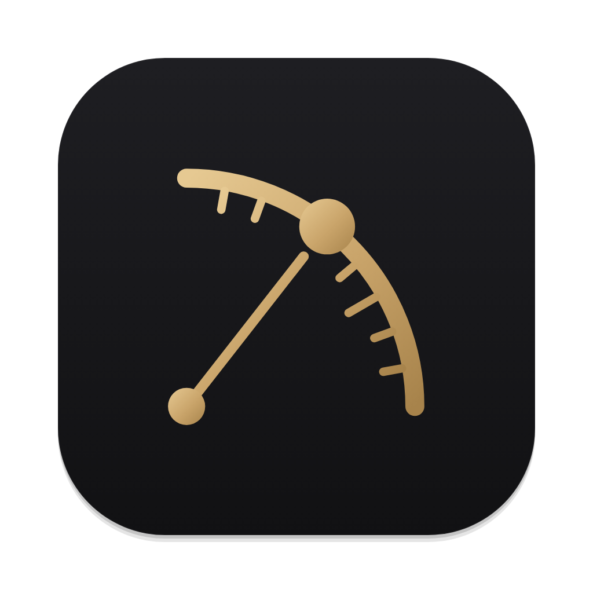

Custom-drawn letters, no font file. Built from the icon's parts: round-capped strokes, true arcs, one brass star.
Friendly and quiet, like the app. The o carries the brass star at the same angle as the quadrant's sighting, so the wordmark repeats the icon's one idea.
Reads well small; sits beside the icon as one lockup.

Wide, upright capitals with the measured spacing of an engraved scale. The O carries the star. More formal and monument-like.
Strong as a title; weaker in a narrow title bar.